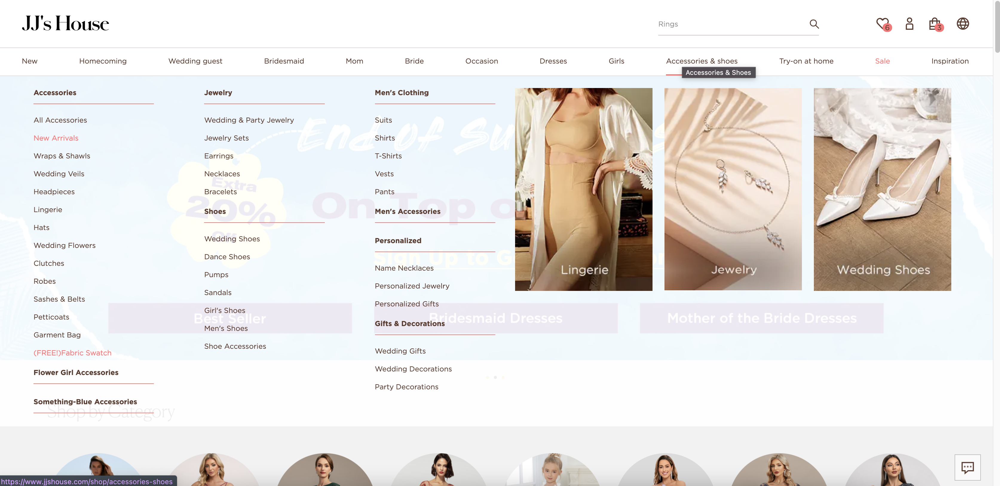
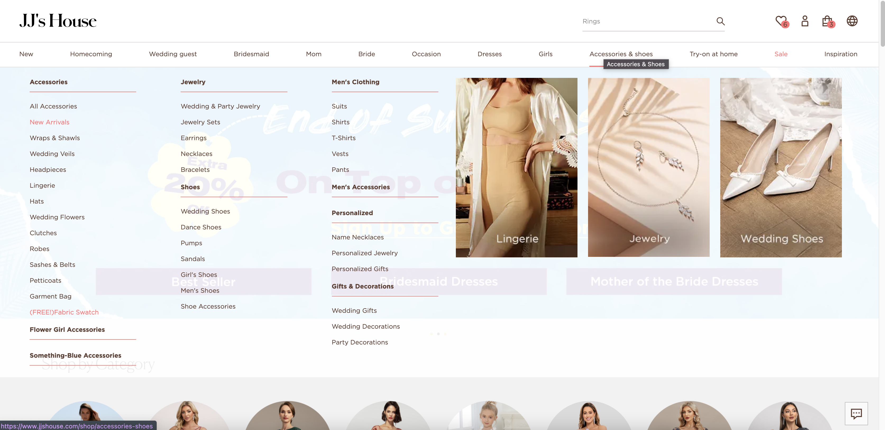

Week 2 Screenshots
These screenshots were taken from the JJ's House website.
I believe this navigation bar is well designed because when you hover over each option, there is a drop-down menu with subsections, each with their own clickable links to a different page. The hover ability over the nav bar that produces a detaailed drop-down menu reduces the number of times the user has to click through different webpages. In addition, the sheer number of options within each subsection also reduces the number of clicks needed to find a specific type of product.


 
